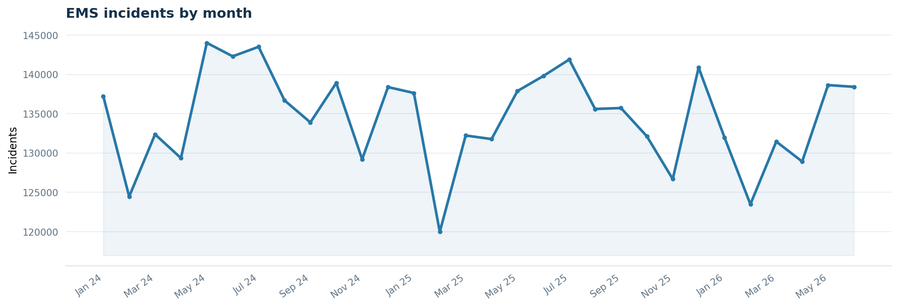
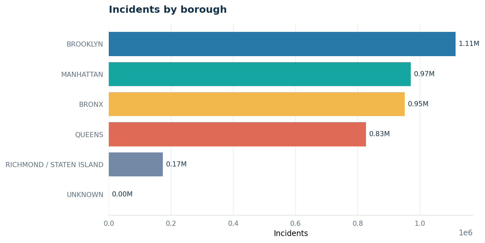
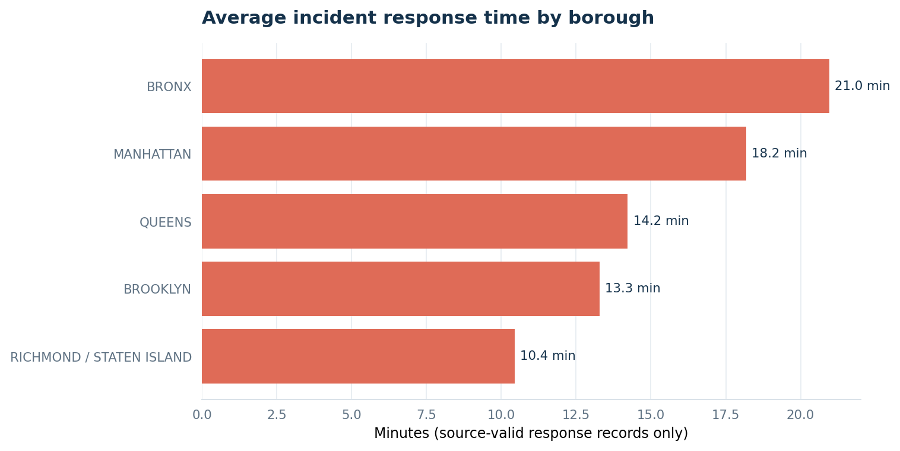
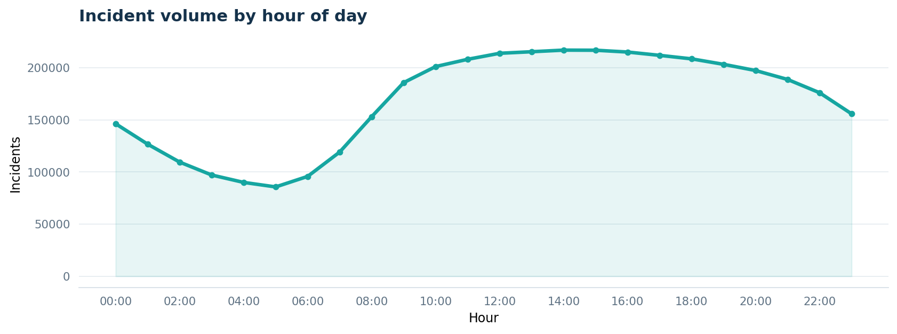
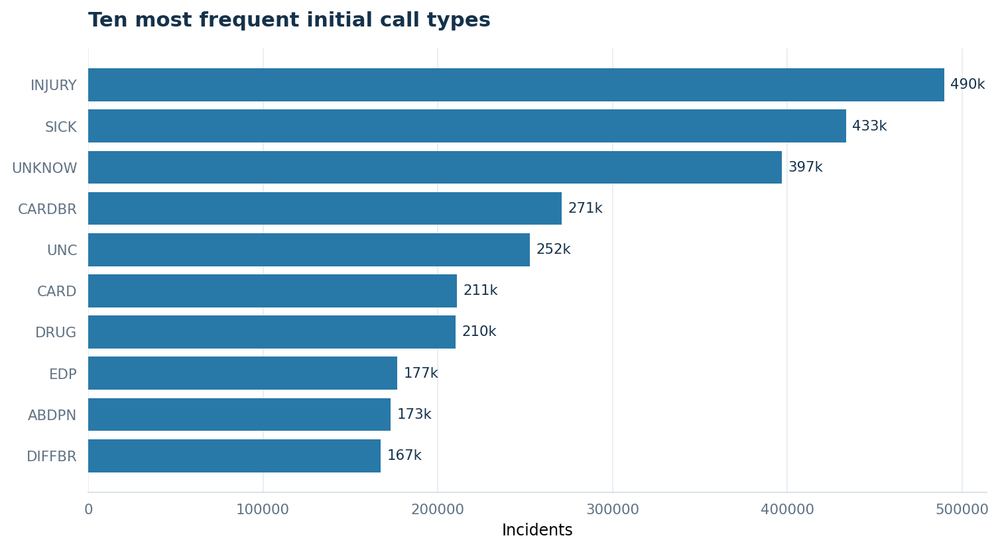
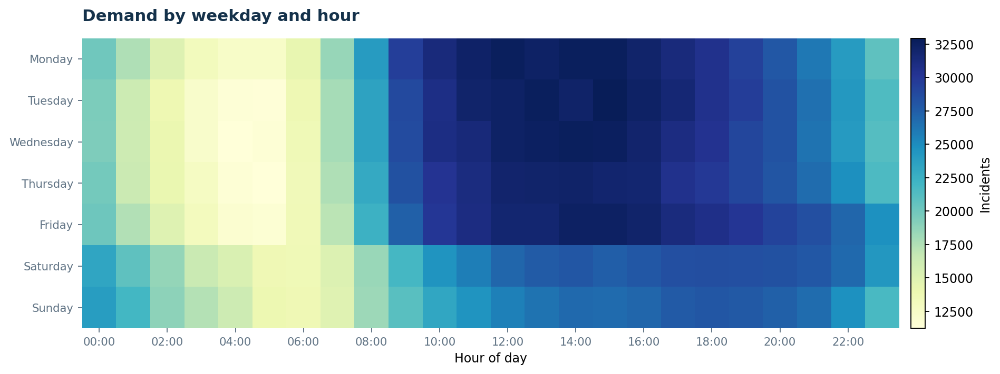

TOTAL INCIDENTS
4,035,659January 2024–June 2026BUSIEST HOUR
14:00–14:59216,775 recordsHIGHEST DEMAND BOROUGH
BROOKLYN1,114,292 recordsAVG VALID INCIDENT RESPONSE
16.3 min3,773,175 valid recordsMonthly demand

Incident counts by calendar month.
Demand by borough

Counts use the source borough categories; Richmond / Staten Island is retained as supplied.
Incident response time

Average incident response time, using only source-valid records. Sample counts are in the companion CSV.
Demand across the day

Counts grouped by the incident clock hour.
Most common call types

Top ten initial call-type categories.
Weekday and hour pattern

Darker cells indicate more dispatch records.